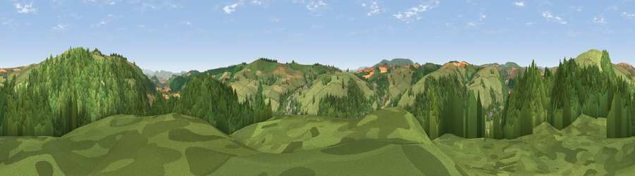

Viewpoint near Stowe
#22566 in England · top 65% of its area beats it · near StoweThe view, rendered

A 360° render of this exact spot computed from the terrain model, tree cover and land cover — summer colours, afternoon light, calibrated against photographs of famous viewpoints. Real trees, hedges and buildings will differ in detail.
The panorama
Grey silhouette: terrain skyline in each direction (720 bearings, Earth curvature and refraction included). Dashed green: skyline with trees (+15 m) and buildings (+8 m) as obstacles. Blue strip: how far the ground is visible on each bearing.
Where the view opens
Wedge length = distance to the farthest visible ground on that bearing (vegetation-aware). Rings at 10, 25 and 50 km.
What fills the view
45% woodland · 45% grassland · 8% built-up · 2% cropland
Angular shares of the visible panorama (visual magnitude), not map area. Landscape diversity 0.44 (0–1 Shannon).
Key numbers
More beautiful places nearby
The staircase of upgrades: each row has a higher view potential than everything closer. Driving times are estimates from straight-line distance, calibrated against real road routing — check an actual route before setting out.
| Place | Direction | Drive | Score |
|---|---|---|---|
| Viewpoint near Stowe | NNW · 1 km | ~3 min | 60.4 |
| Cwm-Sanaham Hill | NW · 3 km | ~7 min | 70.1 |
| Stow Hill | ENE · 3 km | ~8 min | 71.7 |
| Viewpoint near Stowe | ENE · 4 km | ~9 min | 74.4 |
| Viewpoint near Stapleton | SE · 6 km | ~12 min | 77.6 |
| Viewpoint near Hopton Castle | ENE · 8 km | ~17 min | 79.3 |
| Rushock Hill | S · 13 km | ~25 min | 80.2 |
| Viewpoint near Leinthall Starkes | ESE · 16 km | ~28 min | 80.3 |
52.35108, -3.04858 · source: screening · position refined by local search. Computed location — check access rights before visiting.